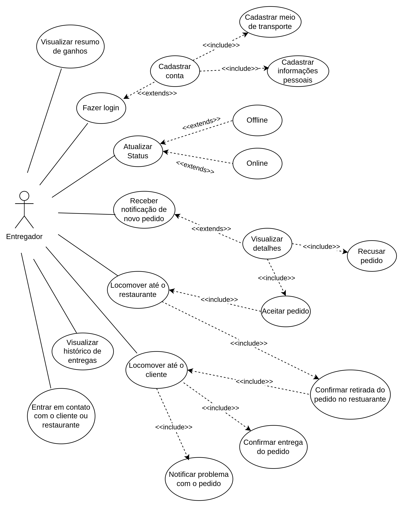

Diagrama de Casos de Uso - Entregador
Introdução
Este documento apresenta os casos de uso do sistema de entregas, detalhando as interações realizadas pelos entregadores no aplicativo. Cada caso de uso descreve o objetivo da funcionalidade, os passos necessários para sua execução, fluxos alternativos e exceções, além das condições prévias e posteriores ao seu uso. O objetivo é fornecer uma visão clara e estruturada sobre como as funcionalidades atendem aos requisitos do sistema, garantindo que o entregador tenha suporte adequado para executar suas tarefas diárias de forma eficiente e prática.
Os casos de uso foram elaborados de maneira concisa, seguindo um padrão que facilita a compreensão e a validação por todos os envolvidos no desenvolvimento e operação do sistema.
Metodologia
A elaboração dos casos de uso seguiu as seguintes etapas:
-
Identificação dos Requisitos: Os requisitos funcionais foram analisados para compreender as funcionalidades principais que o sistema deve oferecer. Cada requisito foi associado a um ou mais casos de uso.
-
Definição do Escopo: Foi determinado o escopo de cada caso de uso, delimitando os atores envolvidos, as ações realizadas e os resultados esperados.
-
Estruturação Padrão: Os casos de uso foram documentados seguindo um modelo padronizado, que inclui elementos como descrição, requisitos, atores, frequências de uso, fluxos principais, alternativos e de exceção, além de condições prévias e posteriores.
-
Validação e Revisão: Cada caso de uso foi revisado para assegurar que cobre todas as possibilidades previstas e atende aos requisitos de maneira completa e clara.
-
Documentação e Organização: Os casos de uso foram organizados de maneira sequencial e categorizados por funcionalidade para facilitar a navegação e a consulta.
Tabela 1: Integrantes
| Matrícula | Nome |
|---|---|
| 211061805 | Guilherme Westphall |
| 231032121 | Wolfgang Friedrich |
| 221034973 | Bruno Vasconcelos |
Autor: Guilherme Westphall
Tabela 2: Especificação de Caso de Uso
| ID | Caso de Uso |
|---|---|
| UCE01 | Fazer Login |
| UCE02 | Cadastrar Conta |
| UCE03 | Atualizar Status de Disponibilidade (Online/Offline) |
| UCE04 | Receber Notificação de Novo Pedido |
| UCE05 | Visualizar Detalhes do Pedido |
| UCE06 | Aceitar ou Recusar Pedido |
| UCE07 | Navegar até o Restaurante |
| UCE08 | Confirmar Retirada do Pedido no Restaurante |
| UCE09 | Navegar até o Cliente |
| UCE10 | Confirmar Entrega do Pedido |
| UCE11 | Visualizar Histórico de Entregas |
| UCE12 | Visualizar Resumo de Ganhos |
| UCE13 | Entrar em Contato com o Cliente ou Restaurante |
| UCE14 | Reportar Problema com o Pedido |
| UCE15 | Cadastrar Forma de transporte |
Autor: Guilherme Westphall, Bruno Araújo
Diagrama
Figura 1: Diagrama de casos de uso do Entregador

Autor(es): Guilherme Westphall, Bruno Cunha Vasconcelos de Araújo, Wolfgang Friedrich Stein
Especificações
UCE01 - Fazer Login
| Elemento | Descrição |
|---|---|
| Caso de Uso | UCE01 - Fazer Login |
| Descrição | O entregador acessa o aplicativo por meio da ação de login |
| Requisitos | R04 |
| Atores | Entregador |
| Frequência de Uso | Alta |
| Pré-condições | - Um telefone celular com conexão com a internet. - O aplicativo HungryHub baixado no telefone celular. |
| Fluxo Principal | - O entregador liga o telefone ligado a internet. - O entregador abre o aplicativo HungryHub. - O usuaŕio insere as informações de email cadastrado e senha associada ao email cadastrado. - O entregador clica no botão de "Entrar". |
| Fluxo Alternativo | - O entregador liga o telefone conectado a internet. - O entregador abre o aplicativo HungryHub. - O entregador clica no botão "Cadastrar-se". - O entregador insere as informações requeridas pelo aplicativo. - O entregador valida o email. - O entregador volta para a tela de Login. - O usuaŕio insere as informações de email cadastrado e senha associada ao email cadastrado. - O entregador clica no botão de "Entrar" |
| Fluxo de Exceção | - O entregador erra sua senha. - O entregador recebe um erro em veremelho de "Senha incorreta". - O entregador clica em "Esqueci minha senha". - O entregador pede um email para redefinir a senha. - O entregador redefine sua senha no email enviado pelo HungryHub. - O entregador retorna para a tela de Login. - O entregador insere as informaçoes de email cadastrado e a nova senha associada ao email cadastrado. - O entregador clica no botão de "Entrar". |
| Pós-condições | O entregador consegue acessar o aplicativo pelo seu perfil. |
| Data da Criação | 28/11/2024 |
Autor: Guilherme Westphall
UCE02 - Cadastrar Conta
| Elemento | Descrição |
|---|---|
| Caso de Uso | UCE02 - Cadastrar Conta |
| Descrição | O entregador realiza o cadastro no aplicativo HungryHub para criar uma conta. |
| Requisitos | R02 |
| Atores | Entregador |
| Frequência de Uso | Média |
| Pré-condições | - Um telefone celular com conexão à internet. - O aplicativo HungryHub baixado no telefone celular. |
| Fluxo Principal | - O entregador liga o telefone conectado à internet. - O entregador abre o aplicativo HungryHub. - O entregador clica no botão "Cadastrar-se". - O entregador insere as informações obrigatórias (nome, email, senha, número de telefone). - O entregador clica em "Finalizar Cadastro". - O sistema envia um email de validação ao endereço informado. - O entregador valida o email clicando no link enviado. - O sistema confirma o cadastro e retorna à tela de login. |
| Fluxo Alternativo | - O entregador clica em "Cadastrar-se". - O entregador insere apenas algumas informações obrigatórias. - O sistema apresenta uma mensagem de erro informando os campos obrigatórios que faltam ser preenchidos. - O entregador corrige os campos e clica em "Finalizar Cadastro". - O fluxo principal é retomado. |
| Fluxo de Exceção | - O entregador insere um email já cadastrado. - O sistema apresenta uma mensagem de erro informando que o email já está em uso. - O entregador utiliza outro email e clica em "Finalizar Cadastro". - O sistema detecta problemas na validação do email enviado (ex.: link expirado). - O sistema permite que o entregador solicite o reenvio do email de validação. |
| Pós-condições | O entregador tem uma conta cadastrada no aplicativo HungryHub e pode utilizá-la para fazer login. |
| Data da Criação | 28/11/2024 |
Autor: Guilherme Westphall
UCE03 - Atualizar Status de Disponibilidade Online/Offline
| Elemento | Descrição |
|---|---|
| Caso de Uso | UCE03 - Atualizar Status de Disponibilidade Online/Offline |
| Descrição | O entregador atualiza seu status de disponibilidade para indicar se está pronto para receber pedidos. |
| Requisitos | R31 |
| Atores | Entregador |
| Frequência de Uso | Alta |
| Pré-condições | - Um telefone celular com conexão à internet. - O entregador deve estar logado no aplicativo HungryHub. |
| Fluxo Principal | - O entregador acessa o aplicativo HungryHub após fazer login. - O entregador acessa o painel de controle principal. - O entregador clica no botão de alternância de disponibilidade. - O sistema atualiza o status para "Online" (se o entregador estava Offline) ou "Offline" (se o entregador estava Online). - O sistema confirma a atualização do status. |
| Fluxo Alternativo | - O entregador tenta mudar o status, mas a conexão com a internet é interrompida. - O sistema exibe uma mensagem de erro informando que não foi possível atualizar o status devido à falta de conexão. - O entregador restaura a conexão e tenta novamente, retomando o fluxo principal. |
| Fluxo de Exceção | - O entregador tenta mudar o status, mas ocorre um erro interno no servidor. - O sistema exibe uma mensagem de erro e não atualiza o status. - O entregador pode tentar novamente mais tarde ou entrar em contato com o suporte. |
| Pós-condições | O status de disponibilidade do entregador é atualizado corretamente no sistema, refletindo sua prontidão para aceitar pedidos. |
| Data da Criação | 28/11/2024 |
Autor: Guilherme Westphall
UCE04 - Receber Notificação de Novo Pedido
| Elemento | Descrição |
|---|---|
| Caso de Uso | UCE04 - Receber Notificação de Novo Pedido |
| Descrição | O entregador recebe uma notificação no aplicativo informando sobre um novo pedido disponível para entrega. |
| Requisitos | R28, R31 |
| Atores | Entregador |
| Frequência de Uso | Alta |
| Pré-condições | - Um telefone celular com conexão à internet. - O entregador deve estar logado no aplicativo HungryHub. - O status de disponibilidade do entregador deve estar como "Online". |
| Fluxo Principal | - O sistema identifica um pedido disponível próximo à localização do entregador. - O sistema envia uma notificação push ao telefone do entregador. - O entregador clica na notificação. |
| Fluxo Alternativo | O entregador está usando o aplicativo quando o sistema identifica um novo pedido. - O sistema exibe diretamente uma mensagem na interface principal do aplicativo informando sobre o novo pedido. - O entregador visualiza a notificação do pedido sem precisar clicar em uma notificação externa. |
| Fluxo de Exceção | - O entregador não recebe a notificação devido a problemas de conexão com a internet. - O entregador restaura a conexão com a internet. - O fluxo principal é retomado. |
| Pós-condições | O entregador visualiza a oportunidade de um novo pedido e pode aceitar ou recusar a entrega. |
| Data da Criação | 28/11/2024 |
Autor: Guilherme Westphall
UCE05 - Visualizar Detalhes do Pedido
| Elemento | Descrição |
|---|---|
| Caso de Uso | UCE05 - Visualizar Detalhes do Pedido |
| Descrição | O entregador acessa os detalhes de um pedido recebido para entender as informações necessárias para a entrega. |
| Requisitos | - |
| Atores | Entregador |
| Frequência de Uso | Alta |
| Pré-condições | - O entregador deve estar logado no aplicativo HungryHub. - O entregador deve ter recebido a notificação de um pedido. |
| Fluxo Principal | - O entregador abre o aplicativo HungryHub após ter recebido uma notificação. - O entregador acessa a seção de "Pedidos Recebidos". - O entregador seleciona um pedido na lista de pedidos. - O sistema exibe os detalhes do pedido, incluindo: nome e endereço do restaurante, nome e endereço do cliente, lista de itens do pedido, valor total do pedido, tempo estimado para entrega e o valor da entrega. |
| Fluxo Alternativo | - O entregador clica na notificação de um novo pedido diretamente. - O sistema abre os detalhes do pedido na tela principal do aplicativo. - O entregador visualiza as informações sem acessar a lista de "Pedidos Recebidos". |
| Fluxo de Exceção | - O entregador tenta acessar os detalhes do pedido, mas ocorre um erro de comunicação com o servidor. - O sistema exibe uma mensagem de erro e recomenda tentar novamente mais tarde. - O entregador pode verificar a conexão e retomar o fluxo principal. |
| Pós-condições | O entregador obtém todas as informações necessárias para iniciar a entrega do pedido. |
| Data da Criação | 28/11/2024 |
Autor: Guilherme Westphall
UCE06 - Aceitar ou Recusar Pedido
| Elemento | Descrição |
|---|---|
| Caso de Uso | UCE06 - Aceitar ou Recusar Pedido |
| Descrição | O entregador pode aceitar ou recusar um pedido recebido pelo aplicativo. |
| Requisitos | R06 |
| Atores | Entregador |
| Frequência de Uso | Alta |
| Pré-condições | - O entregador deve estar logado no aplicativo. - O entregador deve ter acesso à internet. |
| Fluxo Principal | - O sistema notifica o entregador sobre um novo pedido. - O entregador visualiza os detalhes do pedido. |
| Fluxo Alternativo | - O entregador recusa o pedido clicando em "Recusar". - O sistema registra a recusa e busca outro entregador. |
| Fluxo de Exceção | - O pedido expira se o entregador não interagir dentro de um tempo limite. |
| Pós-condições | O pedido é aceito ou recusado pelo entregador. |
| Data da Criação | 28/11/2024 |
Autor: Bruno Araújo
UCE07 - Navegar até o Restaurante
| Elemento | Descrição |
|---|---|
| Caso de Uso | UCE07 - Navegar até o Restaurante |
| Descrição | O entregador pode acessar a rota para o restaurante através do aplicativo. |
| Requisitos | R07 |
| Atores | Entregador |
| Frequência de Uso | Alta |
| Pré-condições | - O entregador deve estar logado no aplicativo. - O entregador deve ter aceitado o pedido. - Internet ativa. |
| Fluxo Principal | - O entregador clica no botão "Navegar até o Restaurante". - O aplicativo abre o mapa com a rota traçada. |
| Fluxo Alternativo | - O entregador opta por usar outro aplicativo de navegação e o sistema redireciona para o app externo escolhido. |
| Fluxo de Exceção | - O GPS está inativo ou falha. - O sistema exibe uma mensagem de erro e orienta o entregador a ativar o GPS. |
| Pós-condições | O entregador chega ao restaurante seguindo a rota exibida pelo aplicativo. |
| Data da Criação | 28/11/2024 |
Autor: Bruno Araújo
UCE08 - Confirmar Retirada do Pedido no Restaurante
| Elemento | Descrição |
|---|---|
| Caso de Uso | UCE08 - Confirmar Retirada do Pedido no Restaurante |
| Descrição | O entregador confirma que retirou o pedido no restaurante antes de iniciar a entrega. |
| Requisitos | R08 |
| Atores | Entregador |
| Frequência de Uso | Alta |
| Pré-condições | - O entregador deve estar logado no aplicativo. - O entregador deve estar no restaurante. |
| Fluxo Principal | - O entregador clica no botão "Confirmar Retirada". - O sistema registra a retirada. |
| Fluxo Alternativo | - O sistema detecta inconsistências (ex.: localização distante do restaurante) e alerta o entregador. |
| Fluxo de Exceção | - O entregador enfrenta problemas no restaurante e não consegue retirar o pedido. |
| Pós-condições | O status do pedido é atualizado para "Em entrega". |
| Data da Criação | 28/11/2024 |
UCE09 - Navegar até o cliente
| Elemento | Descrição |
|---|---|
| Caso de Uso | UCE09 - Locomover até o cliente |
| Descrição | O entregador vai até o endereço físico do cliente. |
| Requisitos | R33 |
| Atores | Entregador |
| Frequência de Uso | Alta |
| Pré-condições | - O entregador deve estar logado no aplicativo. - O entregador deve ter recebido o pedido |
| Fluxo Principal | - O Entregador abre o aplicativo. - Pelo recurso da gelocalização o entregador localiza o cliente. - O entregador se locomove até o cliente . |
| Fluxo Alternativo | |
| Fluxo de Exceção | - O entregador enfrenta problemas com o acesso do aplicativo e não encontra o endereço do cliente |
| Pós-condições | O entregador chega até o cliente para fazer a entrega do pedido |
| Data da Criação | 28/11/2024 |
Autor: Guilherme Silva Dutra
UCE10 - Confirmar entrega do pedido
| Elemento | Descrição |
|---|---|
| Caso de Uso | UCE10 - Confirmar entrega do pedido |
| Descrição | O entregador confirma a entrega do pedido |
| Requisitos | pendente |
| Atores | Entregador |
| Frequência de Uso | Alta |
| Pré-condições | - O entregador deve estar logado no aplicativo. - O entregador deve ter recebido o pedido - O entregador deve ter entregado o pedidio |
| Fluxo Principal | - O Entregador entrega o pedido. - O Entregador abre o aplicativo. - O entregador confirma que entregou o pedido |
| Fluxo Alternativo | |
| Fluxo de Exceção | - O entregador enfrenta problemas com o acesso do aplicativo e não copnsegue confirmar a entregado do pedido |
| Pós-condições | O entregador confirmar a entrega do pedido e o Cliente recebe o seu pedido |
| Data da Criação | 28/11/2024 |
Autor: Guilherme Silva Dutra
UCE11 - Visualizar Histórico de Entregas
| Elemento | Descrição |
|---|---|
| Caso de Uso | UCE11 - Visualizar Histórico de Entregas |
| Descrição | O entregador pode acessar um histórico com detalhes de todas as entregas realizadas. |
| Requisitos | R11 |
| Atores | Entregador |
| Frequência de Uso | Média |
| Pré-condições | - O entregador deve estar logado no aplicativo. |
| Fluxo Principal | - O entregador acessa a seção "Histórico de Entregas". - O sistema exibe uma lista com as entregas realizadas. |
| Fluxo Alternativo | - O entregador aplica filtros (ex.: data ou status) para encontrar entregas específicas. |
| Fluxo de Exceção | - O sistema enfrenta problemas de conexão e não consegue carregar o histórico. |
| Pós-condições | O entregador visualiza as informações detalhadas do histórico de entregas. |
| Data da Criação | 28/11/2024 |
Autor: Wolfgang Friedrich
UCE12 - Visualizar Resumo de Ganhos
| Elemento | Descrição |
|---|---|
| Caso de Uso | UCE12 - Visualizar Resumo de Ganhos |
| Descrição | O entregador pode acessar um resumo detalhado dos seus ganhos acumulados no aplicativo. |
| Requisitos | R12 |
| Atores | Entregador |
| Frequência de Uso | Alta |
| Pré-condições | - O entregador deve estar logado no aplicativo. |
| Fluxo Principal | - O entregador acessa a seção "Resumo de Ganhos". - O sistema exibe os ganhos acumulados por período. |
| Fluxo Alternativo | - O entregador aplica filtros para visualizar ganhos específicos (ex.: semanais ou mensais). |
| Fluxo de Exceção | - O sistema encontra problemas de sincronização com os dados de pagamentos. |
| Pós-condições | O entregador visualiza os ganhos acumulados e pode planejar seus rendimentos futuros. |
| Data da Criação | 28/11/2024 |
Autor: Wolfgang Friedrich
UCE13 - Entrar em Contato com o Cliente ou Restaurante
| Elemento | Descrição |
|---|---|
| Caso de Uso | UCE13 - Entrar em Contato com o Cliente ou Restaurante |
| Descrição | O entregador pode entrar em contato com o cliente ou restaurante através de opções fornecidas pelo aplicativo. |
| Requisitos | R13 |
| Atores | Entregador |
| Frequência de Uso | Alta |
| Pré-condições | - O entregador deve estar logado no aplicativo. |
| Fluxo Principal | - O entregador seleciona a opção de contato com o cliente ou restaurante. - O sistema exibe as opções disponíveis (telefone, chat, etc.). |
| Fluxo Alternativo | - O entregador não consegue contato via telefone e utiliza o chat no aplicativo. |
| Fluxo de Exceção | - Os dados de contato do cliente ou restaurante estão indisponíveis. |
| Pós-condições | O entregador resolve pendências diretamente com o cliente ou restaurante. |
| Data da Criação | 28/11/2024 |
Autor: Wolfgang Friedrich
UCE14 - Reportar Problema com o Pedido
| Elemento | Descrição |
|---|---|
| Caso de Uso | UCE14 - Reportar Problema com o Pedido |
| Descrição | O entregador pode reportar problemas relacionados ao pedido, como itens incorretos ou atraso. |
| Requisitos | R14 |
| Atores | Entregador |
| Frequência de Uso | Média |
| Pré-condições | - O entregador deve estar logado no aplicativo. |
| Fluxo Principal | - O entregador acessa a seção "Reportar Problema". - O entregador seleciona o tipo de problema e fornece detalhes. |
| Fluxo Alternativo | - O entregador anexa fotos ou evidências do problema reportado. |
| Fluxo de Exceção | - O sistema enfrenta falhas ao registrar o problema. |
| Pós-condições | O problema é registrado no sistema e enviado para análise pela equipe responsável. |
| Data da Criação | 28/11/2024 |
Autor: Wolfgang Friedrich
UCE15 - Cadastrar Forma de Transporte
| Elemento | Descrição |
|---|---|
| Caso de Uso | UCE15 - Cadastrar Forma de Transporte |
| Descrição | O entregador pode cadastrar ou atualizar sua forma de transporte (ex.: moto, bicicleta, carro). |
| Requisitos | R15 |
| Atores | Entregador |
| Frequência de Uso | Baixa |
| Pré-condições | - O entregador deve estar logado no aplicativo. |
| Fluxo Principal | - O entregador acessa a seção "Forma de Transporte". - O entregador seleciona ou insere os detalhes do transporte. |
| Fluxo Alternativo | - O entregador edita informações previamente cadastradas sobre o transporte. |
| Fluxo de Exceção | - O sistema encontra falhas ao salvar ou atualizar as informações. |
| Pós-condições | A forma de transporte do entregador é atualizada no sistema. |
| Data da Criação | 28/11/2024 |
Autor: Wolfgang Friedrich
Referências
- Caso de Uso – Include, Extend e Generalização, ATÉ O MOMENTO. Disponível em: https://www.ateomomento.com.br/caso-de-uso-include-extend-e-generalizacao/. Acessado em 27 de novembro de 2024.
Histórico de versões
| Versão | Data da alteração | Comentário | Autor(es) | Revisor(es) | Data de revisão |
|---|---|---|---|---|---|
| 1.0 | 28/11/2024 | Criação do documento | Guilherme Westphall | Júlio Roberto da Silva Neto | 29/11/2024 |
| 1.1 | 28/11/2024 | Adiciona o diagrama | Guilherme Westphall | Júlio Roberto da Silva Neto | 29/11/2024 |
| 1.2 | 28/11/2024 | Adiciona especificações dos casos UCE01 ao UCE05 | Guilherme Westphall | Júlio Roberto da Silva Neto | 29/11/2024 |
| 1.3 | 28/11/2024 | Adiciona UCE15 na tabela 02 | Bruno Araújo | Júlio Roberto da Silva Neto | 29/11/2024 |
| 1.4 | 28/11/2024 | Adiciona introdução, metodologia, especificações dos casos UCE06 ao UCE10 | Bruno Araújo | Júlio Roberto da Silva Neto | 29/11/2024 |
| 1.5 | 28/11/2024 | Adiciona especificações dos casos UCE11 ao UCE15 | Wolfgang Friedrich | Júlio Roberto da Silva Neto e Guilherme Silva Dutra | 29/11/2024 |